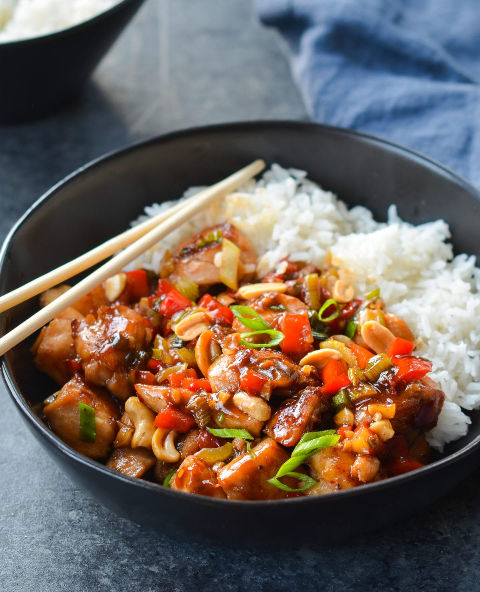

Kung Pao Chicken

Description
Kung Pao Chicken is a dish featuring small pieces of diced chicken, peanuts, and dried red chili peppers. While the dish originated in Sichuan province, its fame brought it to other provinces as well, each with their own regional variation and flavor.
The dish has also made its way out of China, and remains a common sight on Chinese takeout menus in countries around the world.
Ingredients
To roast the peanuts (can also substitute roasted shelled peanuts and skip this step!):
- 1 teaspoon vegetable oil
- 1 cup raw peantus (shelled, with or without the skin)
To marinate the chicken:
- 12 oz. chicken breast (cut into 3/4-inch/2cm cubes)
- 1 teaspoon vegetable oil
- 1 teaspoon cornstarch
- 1 teaspoon shaoxing wine
- 1/8 teaspoon salt
- 1 pinch white pepper
To prepare the sauce:
- 1 tablespoon light soy sauce
- 1/2 teaspoon dark soy sauce
- 1 tablespoon rice wine vinegar
- 1 teaspoon sugar
- 3 tablespoons water
- 1 teaspoon cornstarch
The rest of your Ingredients:
- 3 tablespoons oil
- 3 cloves garlic (smashed and sliced)
- 2 thin slices ginger (minced)li>
- 2 dried red chilies (deseeded and chopped; these can be quite spicy, so adjust according to your own tastes)
- 1/2 teaspoon Sichuan peppercorn powder
- 6 scallions (white portions only, cut into 3/4-inch/ 2cm pieces)
Steps
- Heat a teaspoon of oil in a wok over medium heat and add a cup of raw shelled peanuts. Stir constantly (or they’ll burn) for 3 minutes. Turn off the heat and stir for another minute using the residual heat in the wok. Set aside to cool. They will turn crunchy once they’re cooled completely. You can also skip this step and use already roasted shelled peanuts.
- Marinate the chicken. Mix together the chicken with all the marinade ingredients in a bowl and set aside for 20 minutes.
- Prepare the sauce. Mix together all the sauce ingredients in a medium bowl and set aside.
- Heat 2 tablespoons oil in a wok over high heat. Sear the chicken, remove from the wok to a bowl, and set aside.
- Turn the heat to low and add another tablespoon oil. Add the garlic, ginger, chilies, Sichuan peppercorn powder, and scallions. Cook for a minute or two until fragrant.
- Add the chicken back to the pan and turn up the heat to high. Stir-fry for a minute and then use your finger to stir up your prepared sauce (the cornstarch will have settled to the bottom, so make sure it’s well incorporated). Add the sauce to the wok and stir-fry for another minute. The sauce should thicken very quickly.
- Finally, add the peanuts. Give everything a final stir and serve.